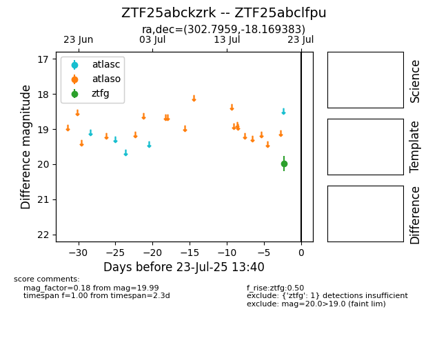

Target ZTF25abckzrk at 2025-07-23 13:40, see:
FINK: fink-portal.org/ZTF25abckzrk
Lasair: lasair-ztf.lsst.ac.uk/objects/ZTF25abckzrk
ALeRCE: alerce.online/object/ZTF25abckzrk
alt names
ZTF25abclfpu (ztf,fink)
ZTF25abckzrk (
coordinates:
equatorial (ra, dec) = (302.7959,-18.16938)
galactic (l, b) = (24.6639,-25.50070)
photometry
last ztfg=19.99
1 ztfg detections
